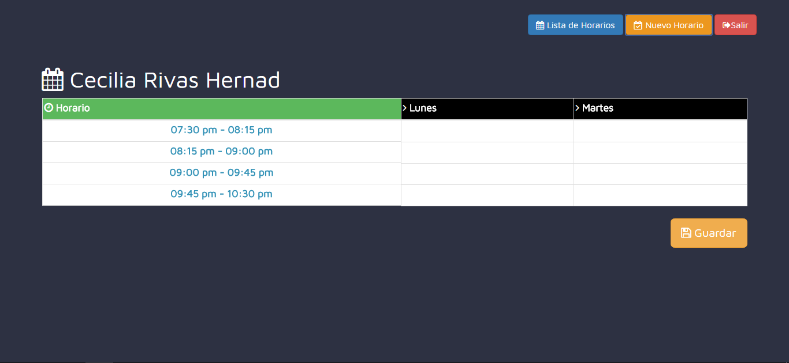
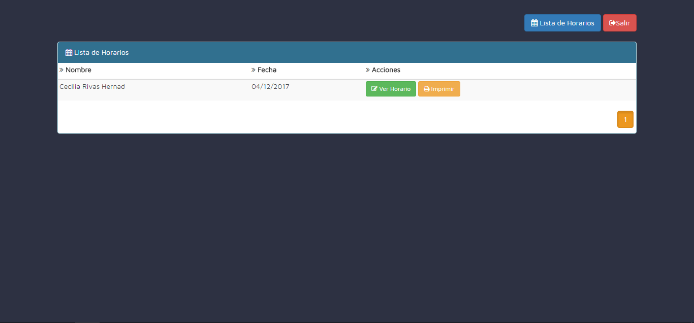

Al momento de que aparezca la lista de horario dar guardar, porque cuando se quiere seleccionar una materia sale un error
para poder agregar una materia sin el erro es necesario dar click en el boton guardar , mandarA directamente a la ventana para ver los horarios guardados y solo se tendra que dar click en el boton ver horario para poder registrar las materias 